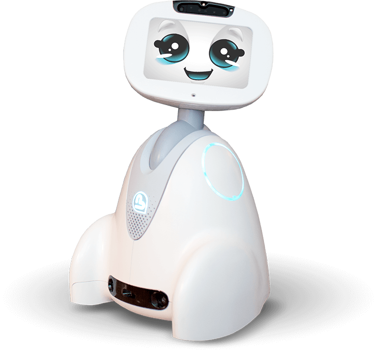

MISSION ET VISION
SOLUTION ROBOTIQUES ÉMOTIONNELLES DÉDIÉES
Nous developpons des robots sociaux pour les marché senior, de la santé, de l’éducation et de l'accueil. Nous imaginons des solutions, des services et des applications d’usages innovants et différenciants au service de la création d’expérience client/utilisateur augmentée.
PRÉSENTATION DU ROBOT BUDDY
BUDDY, le robot émotionnel, peut améliorer la vie de tous, et plus particulièrement, créer des liens sociaux, soutenir l'apprentissage des enfants, veiller et prendre soin de nos aînés.
BUDDY, L'AVENIR DE L'ÉDUCATION ET DE LA SOCIALISATION
Un outil pédagogique pour permettre aux élèves d'apprendre différemment tout en s'amusant et de les préparer simplement au monde de demain: Partenaire d'apprentissage, Autisme, Robot avatar de téléprésence.
BUDDY, LE COMPAGNON DE VIE DES SÉNIORS
Un partenaire à la personnalité attachante au service du bien vieillir de nos aînés vivant seuls à la maison ou en institution, pour veiller sur eux, animer leur quotidien et les sortir de leur isolement.
BUDDY, LE ROBOT D'ACCUEIL ET DE PRÉSENTATION
BUDDY est parfait pour enrichir votre expérience client, générer de l'intérêt et du trafic, présenter des offres et diriger en fonction des demandes, ainsi que pour vous divertir.
BUDDY, UNE PLATEFORME ROBOTIQUE POUR LES DÉVELOPPEURS
Une plateforme ouverte et évolutive avec ses outils de développement (SDK) pour donner vie à un compagnon au potentiel incroyable. La seule limite d'utilisation est l'imagination !!!!
BUDDY, L'AVATAR DE L'ÉLÈVE EMPÊCHÉ
Le robot Buddy de Télépresence permet de lutter contre l'isolement des enfants empêchés, en longue convalescence, et les aide à matérialiser leur présence physique à distance, de manière unique, lorsqu’ils sont physiquement incapables d’aller à l’école.
ILS NOUS FONT CONFIANCE: POURQUOI PAS VOUS?

CRÉER UNE EXPÉRIENCE INDÉDITE DU VOYAGE
“En tant qu’entreprise fortement orientée client et souhaitant développer les usages de demain, nous avons tout de suite été séduit par le robot compagnon BUDDY qui représente la quintessence d’un service innovant et attentionné à bord”
Fabrice Toledano, Directeur Général d’iDTGV / SNCF
PRÉSENTER LA DÉMONSTRATION DE L'EXPERIENCE CENTER DE SOMFY
"Le digital transforme désormais nos attentes en tant que consommateur par rapport à notre maison: il rend plus exigeant, désirant tout à la fois beaucoup de richesse dans l’usage des équipements, des interfaces minimalistes mais accueillantes. Le lien créé entre BUDDY et 'Tahoma' permet d’apporter une réponse originale à ce défi, avec une expérience utilisateur vivante et personnalisée"
Marc Westermann, Directeur de l’Activité Solutions Connectées chez SOMFY
TEST AND DEVELOP THE USES OF THE BUDDY ROBOT FOR THE GOOD AGING OF OUR RESIDENTS AND OUR CUSTOMERS
"We are convinced that companion robots provide real service to fragile people. An interest which has led us to work together on several experiments ... To date, we are not aware of an equivalent product to Buddy, which is at its level of maturity in terms of mechatronics and finishing. Its cute, small, friendly side makes it an easy acceptance companion ... "
Fabrice FLOTTES de POUZOLS - Digital Director at KORIAN
COMMENT BUDDY PEUT-IL VOUS AIDER?
Siège
BLUE FROG ROBOTICS
10 rue Mercœur
75011 PARIS, FRANCE